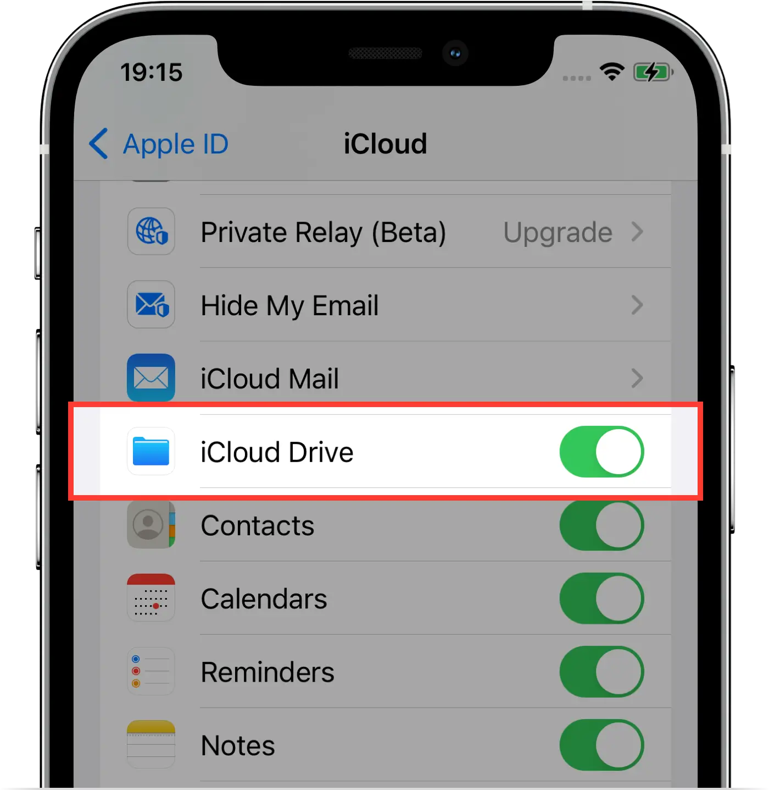
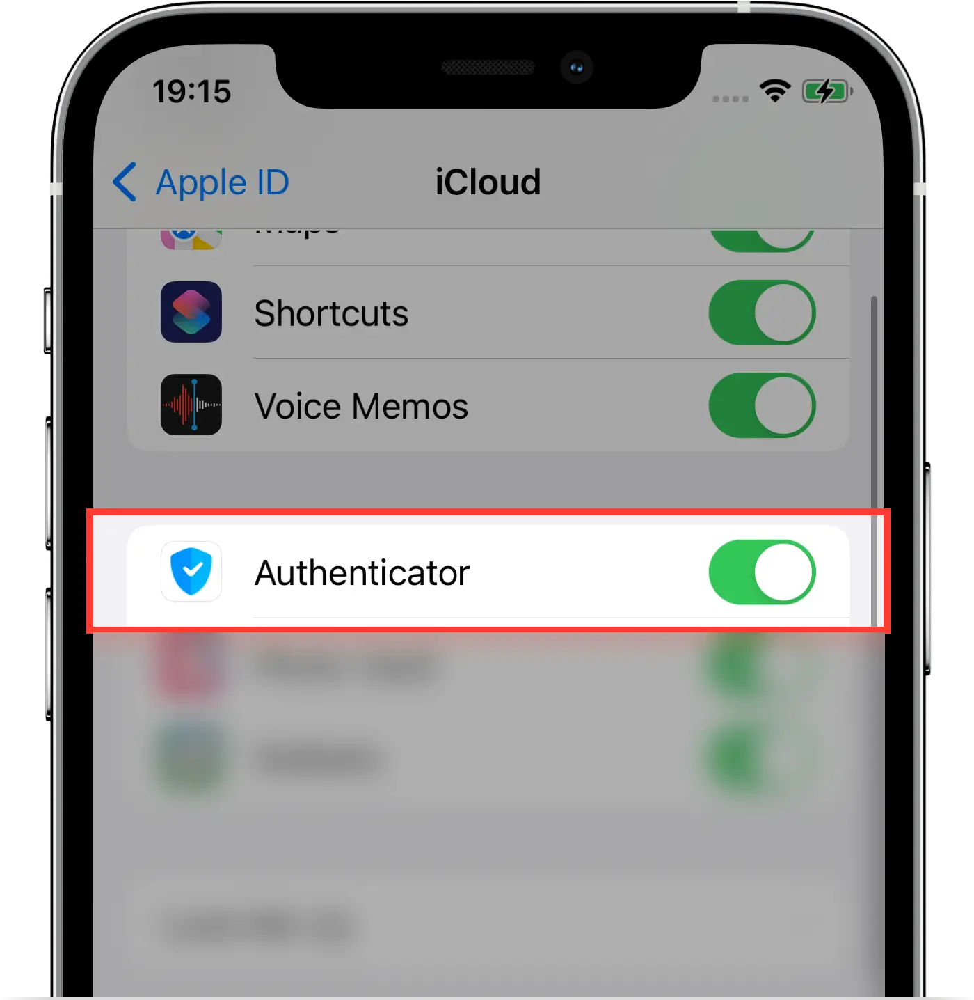

Frequently Asked Questions
Here's a list of some of our most common questions
Authenticator is an app that generates secure two-factor authentication (2FA) codes for your accounts. When you set up your account with two-factor authentication (2FA), you will receive a secret key to enter into the Authenticator, usually, the key is in a QR code form.
This establishes a secure connection between Authenticator and your account. Once this secure connection is established, the Authenticator will generate a 6-8 digit code that is required to access your account. Even, if someone knows your password they still need the 2FA code to access your account.
This establishes a secure connection between Authenticator and your account. Once this secure connection is established, the Authenticator will generate a 6-8 digit code that is required to access your account. Even, if someone knows your password they still need the 2FA code to access your account.
Two-factor authentication (2FA), sometimes referred to as two-step verification, is an extra layer of security for your account in which users provide two different authentication factors to verify themselves. This process is done to better protect both the user's credentials and the resources the user can access.
Two-factor authentication provides a higher level of security than authentication methods that depend on single-factor authentication (SFA), in which the user provides only one factor - typically, a password or passcode. Two-factor authentication methods rely on a user providing a password, as well as a second factor, usually either a security code or a biometric factor, such as a fingerprint or facial scan.
Two-factor authentication provides a higher level of security than authentication methods that depend on single-factor authentication (SFA), in which the user provides only one factor - typically, a password or passcode. Two-factor authentication methods rely on a user providing a password, as well as a second factor, usually either a security code or a biometric factor, such as a fingerprint or facial scan.
The key advantage is the approach. With security and privacy in mind, we designed this app to be convenient for everyone. No account required. All data are encrypted by default even if stored in iCloud. Synchronization and Backup. User-friendly and native experience all Apple devices.
The majority of sites (Gmail, Office 365, Dropbox, Facebook, etc.) support two-factor authentication (2fa) and usually provide a step by step guide in how to enable that security option. Alternatively, you can visit our 2FA Guides page.
All your data stored in Authenticator is always end-to-end encrypted and your Password is never shared with anyone, even with us, this makes it impossible to restore your password. Unfortunately, the very last and only option available to continue using Authenticator is to start over and create a new vault.
To start over and create a new vault you need to follow the next steps:
1. Introduce the wrong password
2. Tap on Forgot password?
3. Tap on Start over
Once you will confirm that you want to erase all your data the app will relaunch and you would be able to set up the authenticator again.
To start over and create a new vault you need to follow the next steps:
1. Introduce the wrong password
2. Tap on Forgot password?
3. Tap on Start over
Once you will confirm that you want to erase all your data the app will relaunch and you would be able to set up the authenticator again.
NOTE: If you will erase all your data, there will be no way to recover your accounts.Before you can start using Authenticator on your Apple Watch, you'll need to get Authenticator on your iPhone.
Then follow these steps:
1. Open Authenticator on your phone.
2. Tap Settings.
3. Enable Apple Watch.
4. Add at least 1 account.
Then follow these steps:
1. Open Authenticator on your phone.
2. Tap Settings.
3. Enable Apple Watch.
4. Add at least 1 account.
If you want to restore/synchronize your accounts on a new device, you can do this action only if you have enabled synchronization and backed up your data previously.
Then follow these steps:
1. Download Authenticator
2. Press on Restore
3. Enter your Password
4. Enable Synchronization
NOTE: Be sure to be logged in with the same iCloud account on all devices where you want to restore/synchronize your data.Then follow these steps:
1. Download Authenticator
2. Press on Restore
3. Enter your Password
4. Enable Synchronization
This issue is related to your iCloud configurations, looks like you have denied access to iCloud Drive or you don't have an active iCloud account on your device.
Authenticator needs access to your iCloud account and iCloud Drive to restore, synchronize and back up your accounts. All your data are protected with strong encryption while in iCloud.
You can enable the iCloud Drive on your iPhone and iPad by following these steps:
1. Go to Settings -> [your name]
2. Tap iCloud
3. Turn on iCloud Drive
4. Turn on Authenticator
Authenticator needs access to your iCloud account and iCloud Drive to restore, synchronize and back up your accounts. All your data are protected with strong encryption while in iCloud.
You can enable the iCloud Drive on your iPhone and iPad by following these steps:
1. Go to Settings -> [your name]
2. Tap iCloud
3. Turn on iCloud Drive

4. Turn on Authenticator

Each website has its own guide on how to enable two-factor authentication. For more detailed instructions on how to enable two-factor authentication(2FA) for your Facebook account, you can visit our How to enable 2FA for Facebook
NOTE: If you haven't set up two-factor authentication for your Facebook account, please contact Facebook support directly.Each website has its own guide on how to enable two-factor authentication. For more detailed instructions on how to enable two-factor authentication(2FA) for your Instagram account, you can visit our How to enable 2FA for Instagram
NOTE: If you haven't set up two-factor authentication for your Instagram account, please contact Instagram support directly.With Authenticator widget, you can access your 2FA codes even faster.
To create a widget for your 2FA accounts you need to follow the next steps:
1. Open Authenticator App and add at least 1 account
2. From the Home Screen, touch and hold a widget or an empty area until the apps jiggle.
3. Tap the add button + in the upper-left corner.
4. Scroll down to select Authenticator then choose from two widget sizes.
5. Tap Add Widget, then tap Done.
6. Touch and hold the recently added Authenticator widget to open the quick actions menu.
7. Tap Edit Widget.
8. Choose the 2FA accounts that you want to be included in Authenticator widget.
To create a widget for your 2FA accounts you need to follow the next steps:
1. Open Authenticator App and add at least 1 account
2. From the Home Screen, touch and hold a widget or an empty area until the apps jiggle.
3. Tap the add button + in the upper-left corner.
4. Scroll down to select Authenticator then choose from two widget sizes.
5. Tap Add Widget, then tap Done.
6. Touch and hold the recently added Authenticator widget to open the quick actions menu.
7. Tap Edit Widget.
8. Choose the 2FA accounts that you want to be included in Authenticator widget.
NOTE:The accounts from Authenticator widget will be stored in the keychain and will be accessible, without entering your password. Please keep in mind that the security of the keychain is managed by the system.Just follow these simple steps covered in this article Import codes from Google Authenticator.
It is super easy to cancel Authenticator App Premium subscription. However, due to Apple restrictions, we are unable to cancel your App Store subscription on our end. App Store subscriptions renew automatically by default, so it is recommended to manually cancel them. If you need help with this, please reach out to us